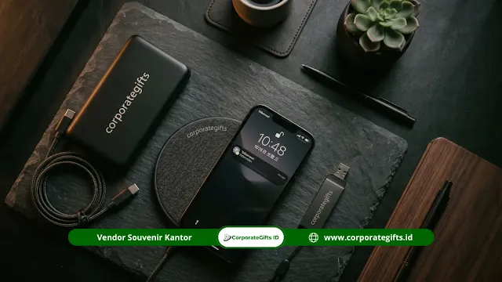

Corporate Gifts ID - Cara memesan souvenir mitra sekolah swasta secara efisien adalah menyiapkan brief desain lengkap (logo vector, palet warna brand, jumlah unit, alokasi anggaran), menyeleksi vendor tepercaya, menyetujui proof desain secara tertulis, lalu memantau jadwal produksi yang umumnya berkisar antara 7 hingga 21 hari kerja. Langkah terbaik adalah memulai pemesanan minimal empat minggu sebelum momentum serah terima cenderamata.
Poin Kunci Pengadaan Souvenir Sekolah:
- Kelengkapan Brief: Wajib menyertakan file logo vector (AI/EPS/SVG), kode warna Pantone/CMYK, dan spesifikasi material detail.
- Timeline Ideal: Rencanakan pengadaan minimal 4 minggu sebelum acara demi menghindari biaya lembur ekspres dan penurunan mutu.
- Legalitas Proof Desain: Selalu terbitkan persetujuan tertulis (approval mock-up) sebelum mesin cetak massal dijalankan.
- Buffer Unit: Cadangkan 5% hingga 10% unit ekstra untuk mengantisipasi tamu kehormatan tambahan atau kendala teknis.
Mengapa Proses Pemesanan Souvenir Mitra Harus Terencana?
Proses pengadaan cenderamata kemitraan sekolah swasta yang tidak terencana kerap memicu konsekuensi merugikan: barang datang terlambat melewati hari acara, warna logo meleset dari standar identitas visual yayasan, hingga anggaran membengkak drastis akibat biaya pengiriman kilat.
Perencanaan matang merupakan fondasi reputasi institusi. Pemesanan mendadak memangkas waktu revisi proofing desain dan meniadakan tahapan quality control (QC). Akibatnya, kualitas hasil fisik souvenir berisiko mengecewakan di mata mitra strategis seperti dinas pendidikan, universitas mitra, yayasan donatur, maupun perusahaan sponsor.
Apa Saja yang Harus Disiapkan Sebelum Memesan Souvenir?
Sebelum menghubungi pihak vendor atau meminta dokumen penawaran harga, tim panitia atau bagian humas sekolah perlu mengumpulkan data teknis berikut secara rapi:
- File logo institusi berformat vector dengan resolusi tanpa batas pecah.
- Pedoman warna identitas visual (color branding guide) resmi yayasan.
- Perhitungan jumlah penerima ditambah cadangan unit darurat.
- Plafon anggaran per paket suvenir (unit cost budget).
- Tanggal pasti serah terima atau jadwal pengiriman barang ke sekolah.
Persiapan File Desain dan Aset Visual Institusi
File logo dalam format vector seperti .AI, .EPS, .PDF, atau .SVG merupakan syarat mutlak untuk pengerjaan sablon presisi, cetak UV digital, gravir laser pada logam, maupun teknik deboss pada kulit sintetis. Hindari menggunakan tangkapan layar (screenshot) dari website sekolah atau media sosial karena memiliki resolusi rendah yang pecah saat diperbesar pada media fisik.
Siapkan pula detail pelengkap seperti:
- Kode warna acuan (Pantone atau CMYK) agar warna khas yayasan tidak meleset menjadi terlalu gelap atau pudar.
- Teks pendukung, nama acara kemitraan, atau slogan resmi yayasan sekolah.
- Foto referensi bentuk atau gaya suvenir yang diinginkan untuk mempercepat komunikasi teknis dengan tim kreatif vendor.
Penentuan Jumlah Unit dan Estimasi Alokasi Anggaran
Tentukan jumlah pesanan secara cermat. Tambahkan cadangan sebesar 5% hingga 10% di atas jumlah daftar tamu undangan. Alokasi cadangan ini sangat berguna untuk mengantisipasi potensi cacat bawaan, kerusakan saat kurir mendistribusikan barang, atau kehadiran mitra kehormatan yang belum terkonfirmasi di awal.
Susun alokasi anggaran per unit yang realistis dengan membandingkan katalog harga suvenir institusi di pasaran, termasuk komponen biaya kustomisasi logo dan kemasan kotak eksklusif.

Verifikasi proof desain digital dan sampel fisik sebelum masuk proses produksi massal.
8 Langkah Terstruktur Memesan Souvenir Mitra Sekolah Swasta
Agar proses pengadaan berjalan lancar, teratur, dan dapat dipertanggungjawabkan dalam laporan pertanggungjawaban (LPJ) institusi, ikuti delapan tahapan SOP pemesanan berikut:
Langkah 1: Susun Brief Pemesanan Tertulis
Brief pemesanan adalah dokumen acuan utama bagi vendor. Muat jenis produk, spesifikasi bahan baku, jumlah pemesanan, teknik branding logo, batas waktu pengiriman, dan estimasi plafon anggaran. Brief yang lengkap mencegah kesalahpahaman dan mengurangi siklus revisi yang membuang waktu.
Langkah 2: Seleksi dan Minta Penawaran Minimal 3 Vendor
Kirimkan brief teknis kepada minimal tiga penyedia jasa souvenir custom resmi. Nilai respons mereka berdasarkan transparansi rincian harga, kelengkapan portofolio institusi pendidikan, kecepatan layanan admin, dan kesanggupan menerbitkan dokumen faktur pajak legal.
Langkah 3: Diskusikan Spesifikasi Teknis Secara Detail
Setelah memilih satu vendor utama, diskusikan seluruh spesifikasi produk: dimensi ukuran, pilihan bahan, teknik cetak (grafir vs cetak UV), posisi letak logo, serta jenis box pembungkus (apakah hardbox eksklusif atau softbox cetak full color).
Langkah 4: Evaluasi Digital Mockup dan Proof Desain
Vendor profesional akan membuatkan lembar proof desain visual. Periksa dengan teliti ejaan nama sekolah, proporsi perbandingan ukuran logo dengan bodi produk, serta kejelasan warna. Berikan persetujuan (approval) secara resmi via email atau pesan tertulis.
Langkah 5: Penerbitan Purchase Order (PO) & Konfirmasi Kontrak
Terbitkan formulir pemesanan resmi (Purchase Order) yang mencantumkan detail pesanan, total biaya, jadwal pembayaran bertahap (termin uang muka dan pelunasan), serta klausul garansi jika terjadi cacat produksi.
Langkah 6: Monitoring Progres Produksi Berkala
Minta pembaruan (update) foto berkala pada tahap pemotongan bahan, pencetakan logo, dan perakitan kemasan. Pemantauan ini memungkinkan deteksi kendala lebih dini sebelum barang selesai diproduksi seluruhnya.
Langkah 7: Pengecekan Sampel Awal (Pre-Production Check)
Untuk pesanan bervolume besar, mintalah vendor memperlihatkan 1-2 unit sampel awal dari lini produksi massal. Cek ketahanan sablon, presisi gravir laser, serta kerapian pengeleman kotak kemasan.
Langkah 8: Penerimaan Barang, Quality Control, dan Pengarsipan
Saat barang tiba di gedung sekolah, lakukan pengecekan sampling fisik: hitung kesesuaian jumlah total, pastikan tidak ada produk retak atau cacat goresan, lalu simpan sampel arsip beserta dokumen penawaran sebagai referensi pemesanan tahun berikutnya.
Estimasi Waktu Produksi Berdasarkan Kategori Produk
Durasi produksi suvenir custom sangat dipengaruhi oleh tingkat kerumitan pengerjaan, ketersediaan stok bahan mentah, serta teknik cetak branding yang digunakan. Rata-rata durasi pengerjaan berkisar antara 7 hingga 21 hari kerja:
- Produk Sederhana (7 - 10 hari kerja): Mug keramik sablon, lanyard id card, tote bag kanvas, dan pulpen promosi standard.
- Produk Menengah (10 - 14 hari kerja): Tumbler stainless vacuum insulated, agenda kerja kulit PU, payung golf lipat, dan pouch kanvas bordir.
- Produk Kompleks & Gift Set VIP (14 - 21 hari kerja): Plakat kristal grafir 3D, leather gift set dual-logo, power bank wireless berbox magnetik, dan cinderamata ukir logam eksklusif.
- Alokasi Ekspedisi Pengiriman: Selalu tambahkan 3 hingga 5 hari kerja jika lokasi pengiriman berada di luar wilayah pulau Jawa.
Kesalahan Umum Saat Memesan Souvenir dan Solusinya
Berdasarkan evaluasi pengadaan di berbagai institusi pendidikan swasta, berikut adalah kesalahan yang paling sering terjadi beserta solusi pencegahannya:
- Pemesanan H-1 Minggu: Mengakibatkan pilihan produk terbatas dan biaya ongkos kirim melonjak. Solusi: masukkan agenda suvenir kemitraan ke dalam kalender akademik tahunan.
- Tidak Meminta Digital Proof: Mengakibatkan posisi logo miring atau terpotong. Solusi: jadikan approval mockup digital sebagai syarat mutlak sebelum pembayaran DP.
- Hanya Tergiur Harga Termurah: Sering berujung pada bahan tumbler tipis yang mudah penyok atau sablon yang cepat mengelupas. Solusi: minta garansi retur unit cacat kepada vendor.
- Format Gambar Pecah (JPEG Kompresi): Menyebabkan garis logo bergerigi saat dicetak. Solusi: minta file vector resmi master logo dari divisi desain grafis yayasan.
Tabel Estimasi Timeline & Kategori Souvenir Sekolah
Panduan matriks berikut memudahkan tim panitia sekolah memetakan timeline pengadaan berdasarkan kategori suvenir yang dipesan:
| Kategori Produk | Spesifikasi Material | Estimasi Produksi | Buffer Waktu | Rekomendasi Acara |
|---|---|---|---|---|
| Simple Merchandise | Mug keramik printing, tote bag kanvas blacu | 7 - 10 hari kerja | +3 hari kerja | Kunjungan studi banding, seminar guru mitra |
| Medium Gifting | Tumbler vacuum stainless, notebook binder kulit | 10 - 14 hari kerja | +5 hari kerja | Penandatanganan MoU kurikulum, rapat dewan komite |
| Premium Gift Set | Plakat akrilik kayu, wireless gadget gift set | 14 - 21 hari kerja | +7 hari kerja | Milestone yayasan sekolah, jamuan donatur utama |
| Dual-Branding VIP | Executive pouch kulit asli, pen set grafir laser | 14 - 21 hari kerja | +7 hari kerja | Kunjungan delegasi kampus luar negeri, mitra industri B2B |
Kesimpulan & Rekomendasi Alur Pengadaan
Memesan souvenir mitra sekolah swasta yang efisien bermuara pada tiga kunci utama: persiapan aset visual beresolusi tinggi, penentuan jadwal kerja dengan buffer waktu aman minimal empat minggu, serta kemitraan dengan vendor suvenir berbadan hukum legal yang menjamin mutu cetak dan ketepatan distribusi.
Dengan SOP terstruktur, proses pengadaan tidak lagi menjadi beban kerja yang menegangkan bagi panitia sekolah, melainkan instrumen diplomasi kelembagaan yang menaikkan citra prestisius sekolah di mata para mitra strategis.